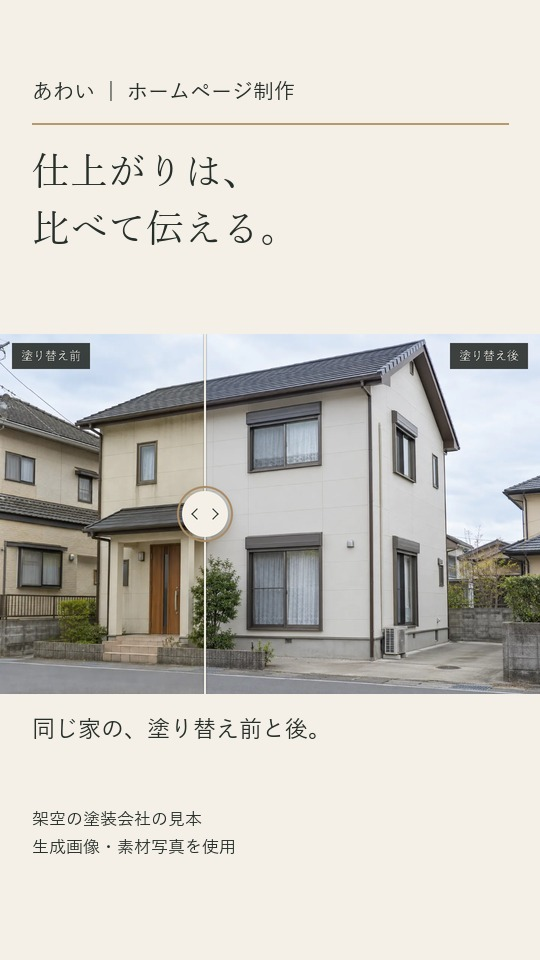
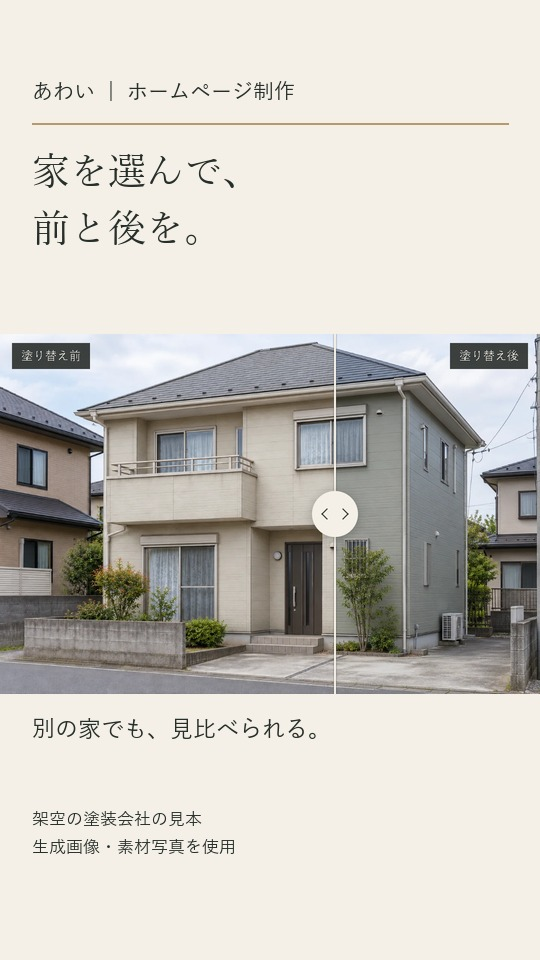
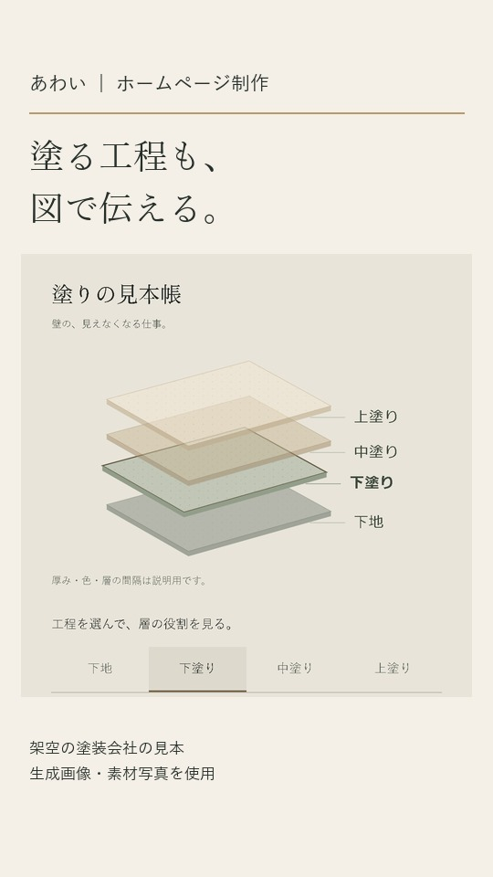
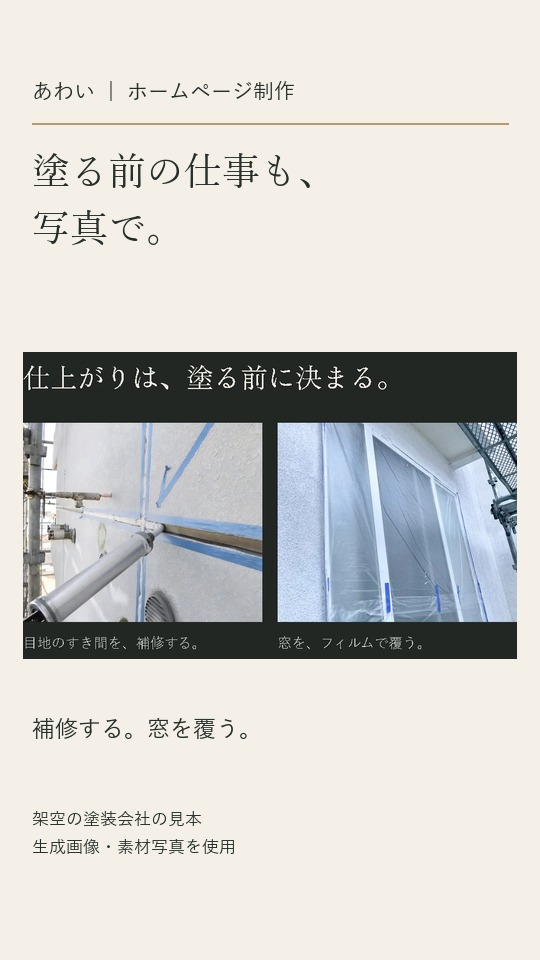
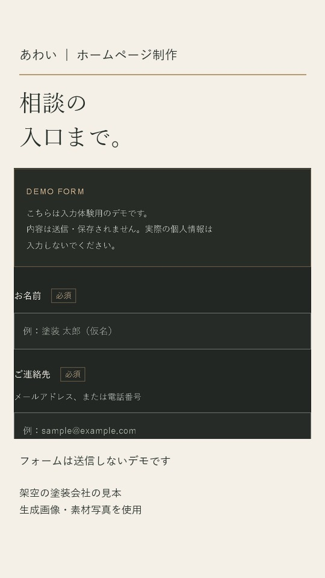
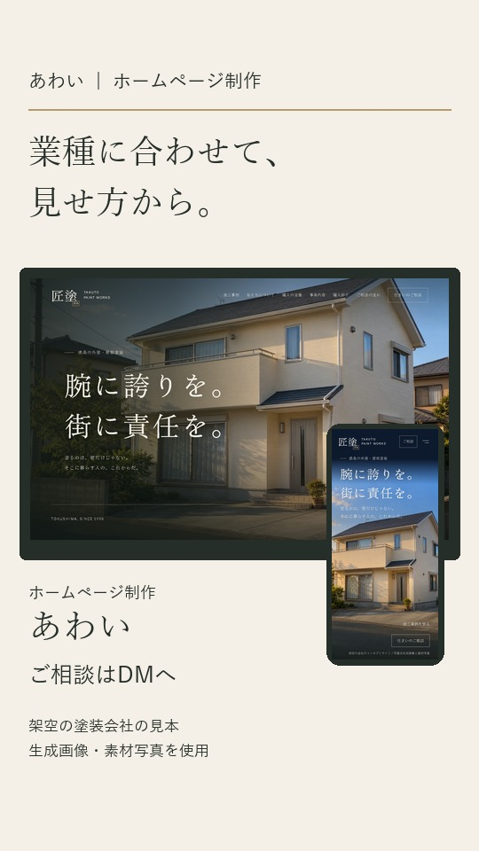

あわいの広告動画 · 確認案 · 2026.11.02
塗装の仕事を、
ホームページでどう見せるか。
塗装会社の見本サイトを使った、あわいの広告動画の絵コンテです。約27秒の縦型動画を想定しています。番号順に、映す画面と流す声を確認できます。
映っている会社・施工例は架空です。写真には生成画像と素材写真を使用しています。まだ動画の本制作やSNSへの投稿はしていません。
010–5秒

声
塗装会社のホームページは、仕上がりを比べて伝える。
動き
1コマ目から前後比較。境目を左右に動かす。
025–9秒

声
家を選んで、前と後を見比べる。
動き
家のタブを押して、灰緑の施工サンプルへ。
039–14秒

声
工程を選ぶと、図と説明が切り替わります。
動き
下地→下塗り→中塗り→上塗りを順に選ぶ。
0414–18秒

声
塗る前の仕事も、写真で伝える。
動き
補修と養生の実画面へ。写真にゆっくり寄る。
0518–22秒

声
最後は、相談フォームへ。
動き
サイトの相談リンクを押し、フォームを見せる。
0622–27秒

声
業種に合わせて、見せ方から。ホームページ制作、あわい。ご相談はDMへ。
動き
PCとスマホの実画面。屋号とDMの案内で締める。
この流れでよければ、「これで進めて」と返してください。
構成を決めた理由と参考
トップから順にスクロールするだけの紹介よりも、比較写真と工程の図で、業種に合わせた見せ方を先に伝える構成を選びました。問い合わせへの効果は未確認です。
Web制作の広告3本は前回調査から継続して参照します。11月1日調査時にそれぞれ1万回超。横型なので、縦型の字幕の置き方まで同じとは扱っていません。
冒頭で何の広告かを伝え、実物の操作からDMへつなぐ方針は、TikTokの広告制作指針、YouTube公式のJenny Hoyos対談、George Blackmanの脚本解説と照合しました。
この絵コンテは、完成動画の動き・音声・再生確認を代わりにするものではありません。本制作後に同じ秒のコマで手本と見比べます。